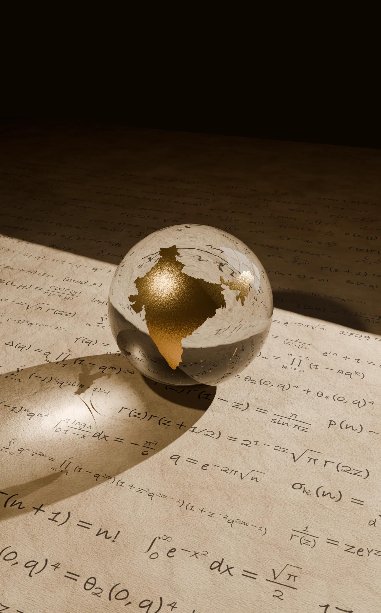

Origen · Intuición · Infinito
Srinivasa Ramanujan
1887 — 1920
Un mundo
en una esfera.
India ocupa el centro de un mundo transparente. A su alrededor, las fórmulas se extienden como el pensamiento de alguien que aprendió a mirar los números a su manera.
La historia detrás de la obra
Un lugar puede ser pequeño en el mapa y contener un universo de ideas.
Detrás de la imagen
La intuición
encuentra un lenguaje
Srinivasa Ramanujan desarrolló en India una parte decisiva de su pensamiento matemático. Su aprendizaje fue, en gran medida, autodidacta: estudió libros, exploró resultados por su cuenta y llenó cuadernos con identidades, series y relaciones entre números. La escuela y sus lecturas le dieron herramientas; él encontró caminos que desbordaban esos materiales.[1]
El libro de G. S. Carr, una recopilación de resultados matemáticos, fue especialmente importante en su formación. Sus estudios formales se interrumpieron, pero continuó investigando mientras buscaba cómo sostenerse económicamente.[2]
En 1913 escribió al matemático G. H. Hardy. Aquella correspondencia abrió una colaboración que lo llevó a Cambridge en 1914. Su trabajo creció entre dos mundos: el de sus cuadernos en India y el de la investigación compartida en Inglaterra.[2]
La esfera sitúa el origen de esa mirada en primer plano. India es el territorio donde sus ideas comenzaron a tomar forma; el cristal deja que la luz y las fórmulas atraviesen sus límites.
Lectura de la obra
Tres detalles
para mirar de cerca.
India en oro
El mapa concentra la atención en el lugar de origen. El oro le da el valor de una memoria que permanece, incluso cuando la vida de su protagonista se desplaza a otro país.
La esfera de cristal
Su forma reúne un mundo entero en un objeto que cabe en la mirada. La curvatura cambia lo que vemos a través de él, como una intuición que transforma materiales conocidos.
Las fórmulas y la luz
El papel alude al trabajo de los cuadernos. Las expresiones forman una composición evocadora de la exploración matemática; la luz las conecta con la esfera y prolonga la escena más allá del mapa.
El comienzo
Nace en India. Sus primeros años y su educación transcurren allí.
Una carta cruza el mundo
Envía resultados a Hardy y comienza una correspondencia decisiva.
El encuentro
Viaja a Inglaterra para trabajar en Cambridge.
El regreso
Vuelve a India con la salud deteriorada.
Los cuadernos permanecen
Muere a los 32 años. Sus manuscritos siguen siendo objeto de estudio.
Para seguir explorando
Fuentes históricas · Consultadas en octubre de 2026
- Trinity College, Cambridge — Srinivasa Ramanujan: formación y trayectoria ↗
- Universidad de St Andrews · MacTutor — Biografía de Srinivasa Ramanujan ↗
Obra digital realizada en 3D. Contorno de India basado en Natural Earth (dominio público). La escena es una interpretación artística de su trayectoria, no la reproducción de un manuscrito histórico.
Continuar el recorrido
Lo que permanece
Alan Turing